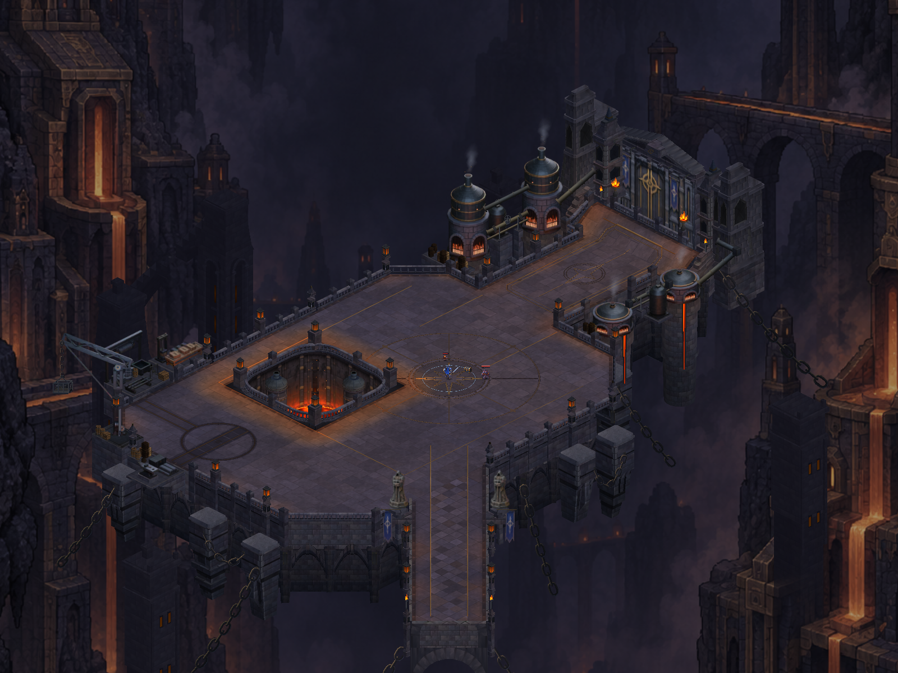
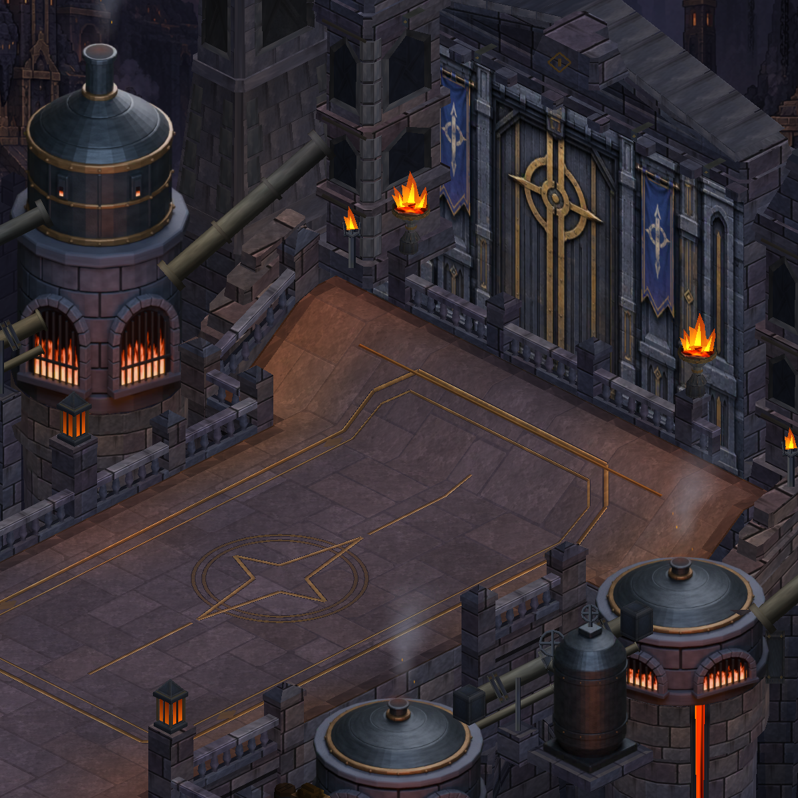
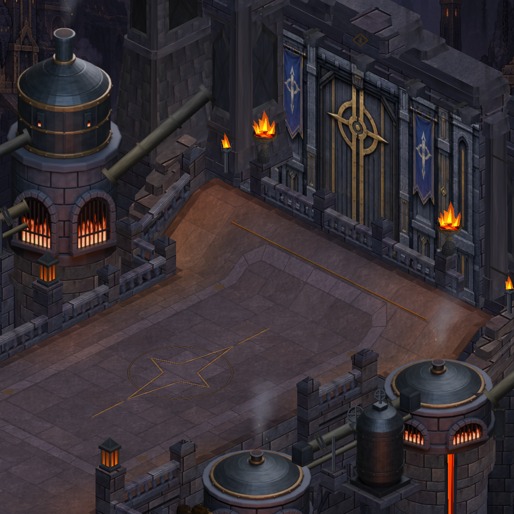
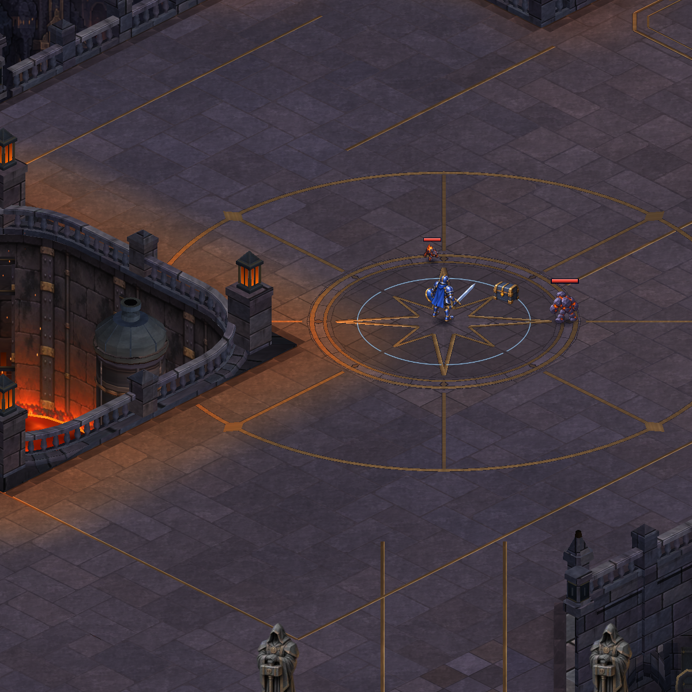
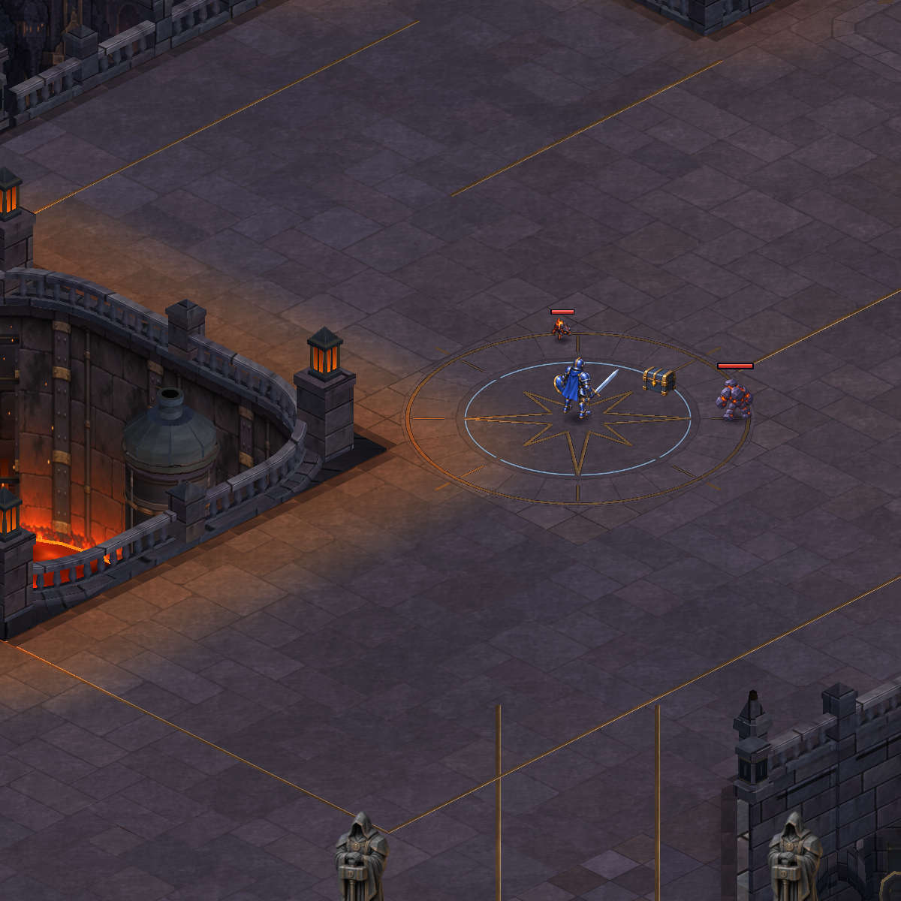

CRYPTFORGE · ACTUAL UNITY CAPTURES
A coherent gate and ceremonial court
A stronger stone portal, a single integrated court medallion and a paved approach. The approved concept is the art target; the runtime images show the actual result.
Verified: 1,009 tests passed. Final Unity visual review accepted; Android APK ready. Phone installation pending.

Before · actual Unity capture, baseline f76b8f3.
Gate structure

Before
After · matched cameraCourt and approach

Before
After · matched cameraPortrait captures use the production camera width with a staged actor and hidden HUD. These are Unity captures, not phone screenshots. Scope and verification